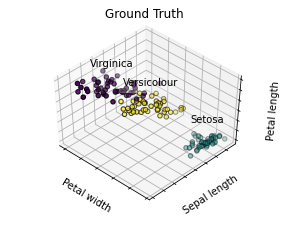
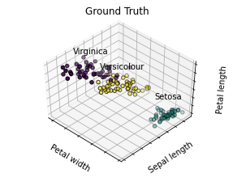

Chi-square menggunakan R
Contents
Chi-square menggunakan R#
from functools import partial
from rpy2.ipython import html
html.html_rdataframe=partial(html.html_rdataframe, table_class="docutils")
%%R
data_frame <- read.csv("https://goo.gl/j6lRXD")
UsageError: Cell magic `%%R` not found.
%%R
print(data_frame)
id treatment improvement
1 1 treated improved
2 2 treated improved
3 3 not-treated improved
4 4 treated improved
5 5 treated not-improved
6 6 treated not-improved
7 7 not-treated not-improved
8 8 treated not-improved
9 9 not-treated improved
10 10 treated improved
11 11 not-treated improved
12 12 not-treated not-improved
13 13 not-treated not-improved
14 14 not-treated not-improved
15 15 not-treated improved
16 16 not-treated improved
17 17 treated improved
18 18 treated improved
19 19 not-treated not-improved
20 20 not-treated not-improved
21 21 treated not-improved
22 22 not-treated not-improved
23 23 treated not-improved
24 24 not-treated improved
25 25 treated improved
26 26 treated improved
27 27 not-treated not-improved
28 28 not-treated improved
29 29 treated not-improved
30 30 treated improved
31 31 not-treated not-improved
32 32 not-treated not-improved
33 33 treated improved
34 34 not-treated improved
35 35 treated not-improved
36 36 not-treated improved
37 37 treated improved
38 38 not-treated not-improved
39 39 not-treated improved
40 40 treated improved
41 41 not-treated improved
42 42 not-treated improved
43 43 not-treated not-improved
44 44 not-treated improved
45 45 not-treated improved
46 46 treated improved
47 47 treated not-improved
48 48 not-treated not-improved
49 49 treated improved
50 50 treated improved
51 51 not-treated not-improved
52 52 treated improved
53 53 not-treated improved
54 54 treated improved
55 55 treated improved
56 56 not-treated improved
57 57 treated improved
58 58 not-treated not-improved
59 59 treated improved
60 60 treated improved
61 61 treated improved
62 62 not-treated improved
63 63 treated not-improved
64 64 treated not-improved
65 65 not-treated improved
66 66 not-treated improved
67 67 not-treated improved
68 68 not-treated not-improved
69 69 not-treated not-improved
70 70 treated improved
71 71 treated not-improved
72 72 not-treated not-improved
73 73 treated not-improved
74 74 not-treated improved
75 75 not-treated not-improved
76 76 not-treated not-improved
77 77 treated not-improved
78 78 not-treated improved
79 79 treated improved
80 80 treated improved
81 81 treated improved
82 82 not-treated not-improved
83 83 treated improved
84 84 not-treated not-improved
85 85 treated improved
86 86 not-treated improved
87 87 not-treated not-improved
88 88 treated improved
89 89 not-treated not-improved
90 90 treated improved
91 91 not-treated not-improved
92 92 not-treated improved
93 93 treated not-improved
94 94 treated not-improved
95 95 not-treated not-improved
96 96 treated improved
97 97 not-treated improved
98 98 treated improved
99 99 not-treated not-improved
100 100 not-treated improved
101 101 treated improved
102 102 treated improved
103 103 not-treated not-improved
104 104 treated improved
105 105 not-treated not-improved
%%R
table(data_frame$treatment, data_frame$improvement)
improved not-improved
not-treated 26 29
treated 35 15
%%R
chisq.test(data_frame$treatment, data_frame$improvement, correct=FALSE)
Pearson's Chi-squared test
data: data_frame$treatment and data_frame$improvement
X-squared = 5.5569, df = 1, p-value = 0.01841
Kesimpulan#
Berdasarkan hasil nilai chi-square hitung 5,5569. Kita telah mendapatkan p-Value lebih kecil dari tingkat signifikansi 0,05, sehingga menolak hipotesis nol (null hypothesis ) dan menyimpulkan bahwa kedua variabel tersebut adalah saling terkait (dependent)
from functools import partial
from rpy2.ipython import html
html.html_rdataframe=partial(html.html_rdataframe, table_class="docutils")
from rpy2.robjects.packages import importr
utils = importr('utils')
dataf = utils.read_csv('https://raw.githubusercontent.com/jakevdp/PythonDataScienceHandbook/'
'master/notebooks/data/california_cities.csv')
import rpy2.ipython.html
rpy2.ipython.html.init_printing()
dataf
| X | city | latd | longd | ... | area_water_km2 | area_water_percent | ||
|---|---|---|---|---|---|---|---|---|
| 0 | 1 | 0 | Adelanto | 34.57611111111112 | -117.43277777777779 | ... | 0.046 | 0.03 |
| 1 | 2 | 1 | AgouraHills | 34.15333333333333 | -118.76166666666667 | ... | 0.076 | 0.37 |
| 2 | 3 | 2 | Alameda | 37.75611111111111 | -122.27444444444444 | ... | 31.983 | 53.79 |
| 3 | 4 | 3 | Albany | 37.886944444444445 | -122.29777777777778 | ... | 9.524 | 67.28 |
| 4 | 5 | 4 | Alhambra | 34.081944444444446 | -118.135 | ... | 0.003 | 0.01 |
| 5 | 6 | 5 | AlisoViejo | 33.575 | -117.72555555555556 | ... | 0.0 | 0.0 |
| 6 | 7 | 6 | Alturas | 41.48722222222222 | -120.5425 | ... | 0.036000000000000004 | 0.57 |
| 7 | 8 | 7 | AmadorCity | 38.419444444444444 | -120.82416666666666 | ... | 0.0 | 0.0 |
| ... | ... | ... | ... | ... | ... | ... | ... | ... |
| 480 | 481 | 480 | Yucaipa | 34.030277777777776 | -117.04861111111111 | ... | 0.013000000000000001 | 0.02 |
| 481 | 482 | 481 | YuccaValley | 34.13333333333333 | -116.41666666666667 | ... | 0.0 | 0.0 |
%load_ext rmagic
The rmagic extension is already loaded. To reload it, use:
%reload_ext rmagic
import numpy as np
import matplotlib.pyplot as plt
X = np.array([0,1,2,3,4])
Y = np.array([3,5,4,6,7])
plt.scatter(X, Y)
<matplotlib.collections.PathCollection at 0x7efcd45fbe50>
%Rpush X Y
%R lm(Y~X)$coef
array([3.2, 0.9])
Xr = X - X.mean(); Yr = Y - Y.mean()
slope = (Xr*Yr).sum() / (Xr**2).sum()
intercept = Y.mean() - X.mean() * slope
(intercept, slope)
(3.2, 0.9)
%R resid(lm(Y~X)); coef(lm(X~Y))
array([-2.5, 0.9])
# Code source: Gaël Varoquaux
# Modified for documentation by Jaques Grobler
# License: BSD 3 clause
import numpy as np
import matplotlib.pyplot as plt
# Though the following import is not directly being used, it is required
# for 3D projection to work with matplotlib < 3.2
import mpl_toolkits.mplot3d # noqa: F401
from sklearn.cluster import KMeans
from sklearn import datasets
np.random.seed(5)
iris = datasets.load_iris()
X = iris.data
y = iris.target
estimators = [
("k_means_iris_8", KMeans(n_clusters=8)),
("k_means_iris_3", KMeans(n_clusters=3)),
("k_means_iris_bad_init", KMeans(n_clusters=3, n_init=1, init="random")),
]
fignum = 1
titles = ["8 clusters", "3 clusters", "3 clusters, bad initialization"]
for name, est in estimators:
fig = plt.figure(fignum, figsize=(4, 3))
ax = fig.add_subplot(111, projection="3d", elev=48, azim=134)
ax.set_position([0, 0, 0.95, 1])
est.fit(X)
labels = est.labels_
ax.scatter(X[:, 3], X[:, 0], X[:, 2], c=labels.astype(float), edgecolor="k")
ax.w_xaxis.set_ticklabels([])
ax.w_yaxis.set_ticklabels([])
ax.w_zaxis.set_ticklabels([])
ax.set_xlabel("Petal width")
ax.set_ylabel("Sepal length")
ax.set_zlabel("Petal length")
ax.set_title(titles[fignum - 1])
ax.dist = 12
fignum = fignum + 1
# Plot the ground truth
fig = plt.figure(fignum, figsize=(4, 3))
ax = fig.add_subplot(111, projection="3d", elev=48, azim=134)
ax.set_position([0, 0, 0.95, 1])
for name, label in [("Setosa", 0), ("Versicolour", 1), ("Virginica", 2)]:
ax.text3D(
X[y == label, 3].mean(),
X[y == label, 0].mean(),
X[y == label, 2].mean() + 2,
name,
horizontalalignment="center",
bbox=dict(alpha=0.2, edgecolor="w", facecolor="w"),
)
# Reorder the labels to have colors matching the cluster results
y = np.choose(y, [1, 2, 0]).astype(float)
ax.scatter(X[:, 3], X[:, 0], X[:, 2], c=y, edgecolor="k")
ax.w_xaxis.set_ticklabels([])
ax.w_yaxis.set_ticklabels([])
ax.w_zaxis.set_ticklabels([])
ax.set_xlabel("Petal width")
ax.set_ylabel("Sepal length")
ax.set_zlabel("Petal length")
ax.set_title("Ground Truth")
ax.dist = 12
fig.show()

 
